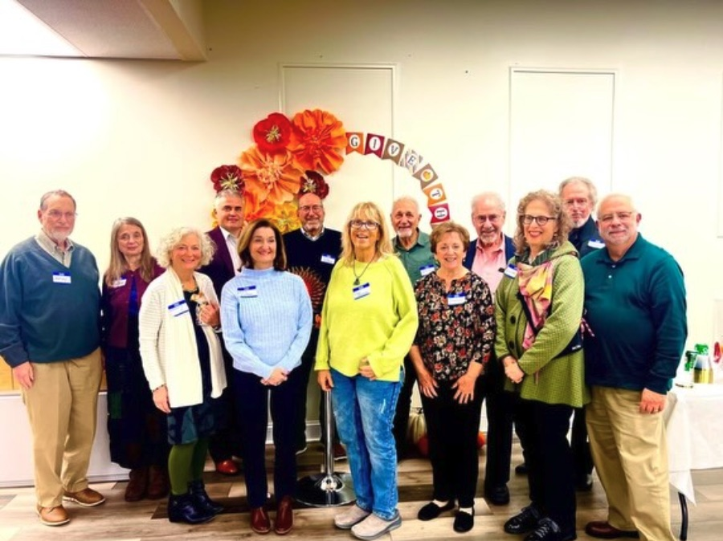
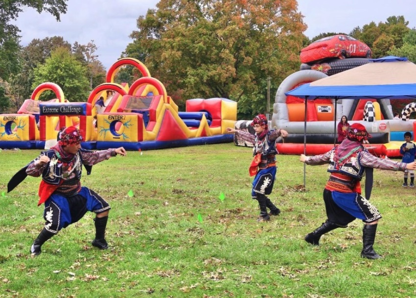

Peace, dialogue, and friendship, built together.
Wellspring Community Center is a charitable, cultural, and educational non-profit bringing people of every background together to learn, connect, and serve.


A hub for unity and inclusion in Connecticut
Wellspring Community Center is a 501(c)(3) charitable, cultural, and educational non-profit organization dedicated to promoting peace, harmony, dialogue, and friendship in diverse cultural settings across Connecticut.
For over two decades, our center has been a hub for community activities, cultural events, and educational programs for people from all walks of life.
Our mission & visionOur programs
Learning, faith, dialogue, and service for children and adults.
Weekend School
Weekend classes for children in a warm, welcoming setting.
Learn more →Religious Education
Religious education programs for both children and adults.
Learn more →Interfaith Dialogue
Bringing people of different faiths together for conversation and friendship.
Learn more →Workshops
Learning opportunities on a range of topics for community members.
Learn more →Community Engagement
Gatherings that bring neighbors together and strengthen connections.
Learn more →Community Service
Service events where volunteers give back to the community.
Learn more →What guides our work
Inclusivity
A welcoming space where everyone, regardless of background, culture, or beliefs, feels valued and respected.
Empowerment
Helping people grow and reach their full potential.
Education
Recognizing the transformative power of education in fostering personal growth and social change.
Community Engagement
Encouraging involvement and volunteerism to build strong, supportive networks that benefit everyone.
Cultural Appreciation
Celebrating the rich tapestry of cultures that make up our community.
Peace & Dialogue
Believing in the power of dialogue to bridge divides and create a more harmonious society.
Events & service opportunities
We post upcoming events and service opportunities on our Gathera page. Check it often to see what’s happening and sign up.
Come visit us in Milford
9 Research Dr, Milford, CT 06460 · Open Monday–Saturday. We’d love to hear from you.